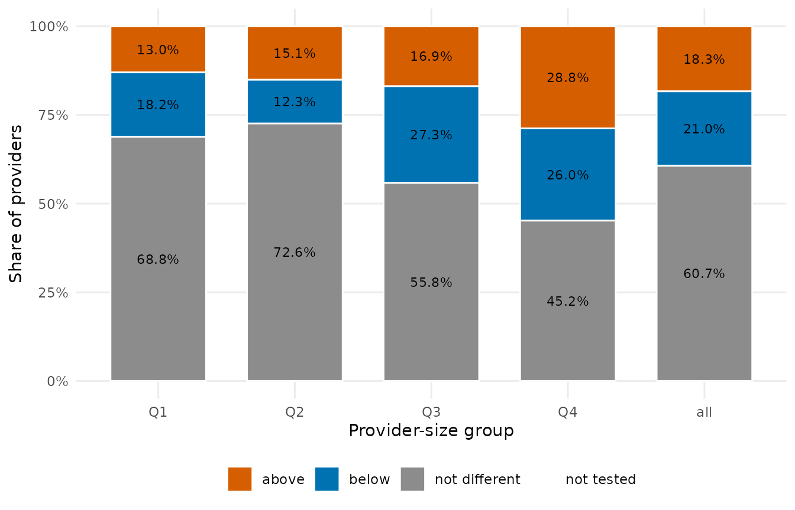
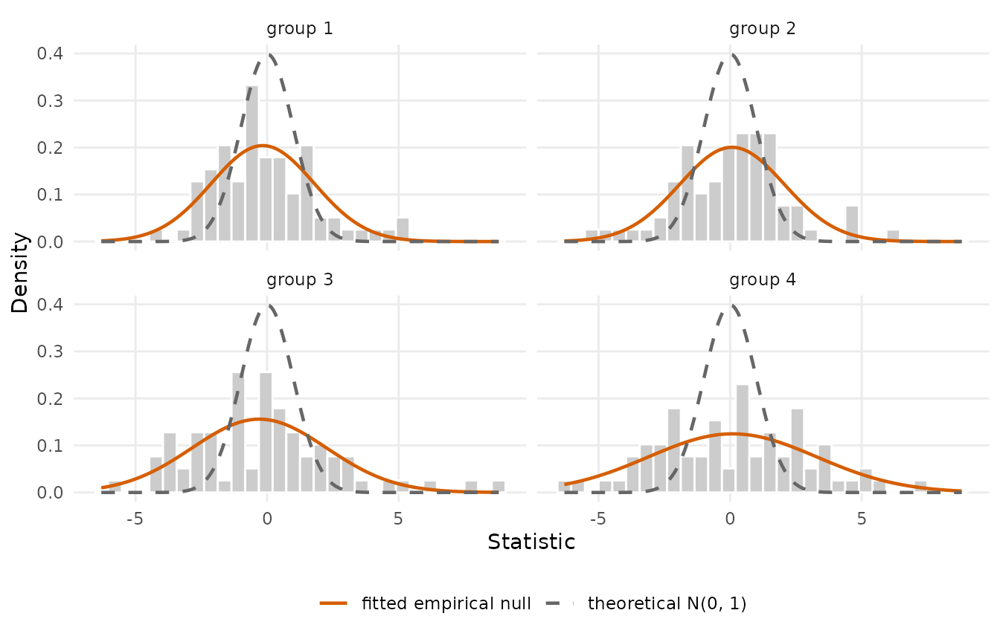
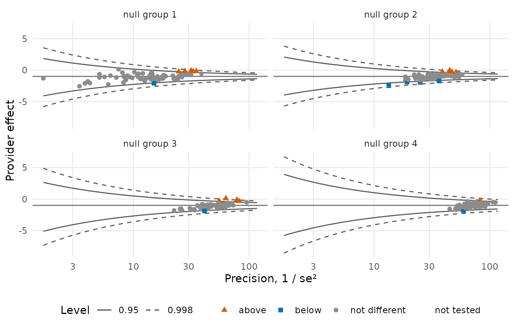

Whichever statistic is chosen, it must be referred to a distribution, and this choice is independent of the statistic and its variance. Testing against the theoretical null \(N(0, 1)\) asks “does this provider differ from the national average?”. Testing against an empirical null asks “is this provider extreme relative to how much providers of similar size ordinarily vary?”. The second is the question a measure intends to ask, because between-provider variation that no adjustment model captures is not something a provider can be held to account for (Kalbfleisch and Wolfe 2013; Efron 2004).
Why the theoretical null miscalibrates
Suppose that beyond what the risk model explains, providers of ordinary quality differ by a random amount, \(\gamma_i = \gamma_0 + u_i\) with \(u_i \sim N(0, \tau^2)\). A Wald statistic is then marginally \(N(0, 1 + \tau^2 / s_i^2)\), more dispersed than the theoretical null by an amount that grows with the provider’s precision: large providers, whose own sampling error is small, are the ones the theoretical null misjudges most. In profiling data the statistics are routinely two to three times as dispersed as \(N(0, 1)\), and tested against it a third of the large providers can be flagged.
library(pprof)
d <- sim_kecc(n_providers = 300, provider_size = c(10, 150), gamma_sd = 0.4, seed = 21)
pd <- pp_data(d, y = "y", x = c("x1", "x2", "x3"), provider = "provider",
patient = "patient", message = FALSE)
fit <- fit_logistic_fe(pd)
tst <- test(fit, statistic = "wald", variance = "robust")
plot(tst, type = "bar")
The empirical null
The null is estimated from the bulk of the statistics themselves: providers are stratified by size, and within each stratum a normal distribution \(N(\mu_g, \sigma_g^2)\) is fitted to the centre of the histogram by robust M-estimation (Huber’s psi with the MAD scale, by default), so that genuine outliers do not determine the reference against which they are judged. Stratification by size is essential, since the overdispersion is itself size-dependent and a single null over-corrects small providers and under-corrects large ones.
en <- null_model("empirical", tst, n_groups = 4)
en
#> Empirical null: 4 group(s) by rank, huber estimator
#> group n_providers n_fitted min_size max_size null_mean null_sd converged
#> 1 75 75 10 49 -0.16542 1.955 TRUE
#> 2 75 75 49 74 0.07151 1.990 TRUE
#> 3 75 75 75 115 -0.29633 2.559 TRUE
#> 4 75 75 115 150 0.09212 3.200 TRUE
plot(en)
Arguments of null_model("empirical", ...):
-
z: a test result (its statistics, providers and sizes are used) or a numeric vector;size: one size per provider, when not the test’s own (person-time for the survival measures); -
n_groupsandgrouping:"rank"(default; the providers sorted by size dealt into consecutive blocks ofceiling(n / k), the convention of the patient-month measures),"quantile"(groups by the empirical quantiles of the size, the convention of the survival measures) or"cut"(the sorted providers cut into intervals of equal length);groupsgives explicit labels; -
estimator:"huber"(default),"bisquare"or"mm", withtuning,maxit,acc; -
common_mean: replace the groups’ locations by one pooled mean or a number;fit_mask: the providers that enter the fits; -
min_group_size,small_group: what to do with a group too small to fit.
The result (pp_null) carries the mean and standard
deviation of every provider’s null, its group, and a
diagnostics table with the fitted parameters, the number of
providers and the convergence of each group.
Calibrating a test
calibrate() refers the statistics to the null: the
adjusted statistic \((z - \mu_g) /
\sigma_g\) replaces the standard normal in the p-values and
flags, and the limits are those of the inverted calibrated test, \(\hat\theta - (\mu_g \pm c\,\sigma_g)\, se\)
(for the mid-p test of a Cox fit, by root finding), so that a limit
excludes the null value exactly when the provider is flagged.
cal <- calibrate(tst, en)
cal
#> Provider tests: wald statistic, robust variance; null median = -0.9935; two.sided, level 0.95
#> 300 providers: 14 above, 7 below, 279 not different, 0 not tested
#> provider estimate se null_value statistic z_adjusted null_mean null_sd
#> P001 -0.8343 0.1664 -0.9935 0.9568 0.4449 0.07151 1.990
#> P002 -0.3834 0.3524 -0.9935 1.7312 0.9700 -0.16542 1.955
#> P003 -0.8023 0.1737 -0.9935 1.1008 0.5172 0.07151 1.990
#> P004 -0.9269 0.1556 -0.9935 0.4281 0.1792 0.07151 1.990
#> P005 -0.6834 0.2658 -0.9935 1.1669 0.6814 -0.16542 1.955
#> P006 -0.7239 0.1898 -0.9935 1.4205 0.8111 -0.16542 1.955
#> null_group p flag lower upper
#> 2 0.6564 0 -1.495 -0.1973
#> 1 0.3320 0 -1.676 1.0253
#> 2 0.6050 0 -1.492 -0.1372
#> 2 0.8578 0 -1.545 -0.3311
#> 1 0.4956 0 -1.658 0.3790
#> 1 0.4173 0 -1.420 0.0348
#> ... 294 more rows
table(theoretical = tst$flag, empirical = cal$flag)
#> empirical
#> theoretical -1 0 1
#> -1 7 56 0
#> 0 0 182 0
#> 1 0 41 14
plot(cal, type = "funnel")
The same in one call, with the null fitted on the result:
same <- test(fit, statistic = "wald", variance = "robust", null_model = "empirical")
identical(same$flag, cal$flag)
#> [1] TRUEnull_model accepts a null kind by name (defaults), a
pp_null object, or a function of the result returning one,
for other settings:
test(fit, statistic = "score", variance = "robust",
null_model = function(t) null_model("empirical", t, grouping = "quantile", n_groups = 4))critical replaces the normal quantile of
level by a fixed critical value for the flags and
limits.
Other nulls
-
null_model("theoretical"): \(N(0, 1)\), the default of every test. -
null_model("fixed", mean = 0, sd = 1.8): a known inflation, for instance the scale a measure’s documentation fixes from earlier years. -
test_measure(location = , scale = ): the same for a measure-level test, one value or one per provider; ornull_modelas above.
head(calibrate(tst, null_model("fixed", sd = 1.8)))
#> Provider tests: wald statistic, robust variance; null median = -0.9935; two.sided, level 0.95
#> 6 providers: 0 above, 0 below, 6 not different, 0 not tested
#> provider estimate se null_value statistic z_adjusted null_mean null_sd
#> P001 -0.8343 0.1664 -0.9935 0.9568 0.5316 0 1.8
#> P002 -0.3834 0.3524 -0.9935 1.7312 0.9618 0 1.8
#> P003 -0.8023 0.1737 -0.9935 1.1008 0.6116 0 1.8
#> P004 -0.9269 0.1556 -0.9935 0.4281 0.2379 0 1.8
#> P005 -0.6834 0.2658 -0.9935 1.1669 0.6483 0 1.8
#> P006 -0.7239 0.1898 -0.9935 1.4205 0.7892 0 1.8
#> null_group p flag lower upper
#> NA 0.5950 0 -1.421 -0.24734
#> NA 0.3361 0 -1.627 0.85976
#> NA 0.5408 0 -1.415 -0.18948
#> NA 0.8120 0 -1.476 -0.37792
#> NA 0.5168 0 -1.621 0.25419
#> NA 0.4300 0 -1.393 -0.05435Decisions and comparisons
Two consequences of the empirical null deserve emphasis. It is a
simultaneous inference device as much as a variance correction:
several thousand providers are tested at once, and the null is estimated
from the centre of the observed statistics rather than assumed. And any
comparison between measures, or between tests, must hold the reference
distribution fixed, or the comparison is uninterpretable: a difference
in flag counts may be entirely a difference in reference.
flag_stability() lays the flags of several choices side by
side:
flag_stability(theoretical = tst, empirical = cal,
quantile_groups = test(fit, statistic = "wald", variance = "robust",
null_model = function(t) {
null_model("empirical", t, grouping = "quantile")
}))
#> Flags under 3 scenarios: 118 providers (19 flagged under every scenario)
#> provider theoretical empirical quantile_groups n_flagged
#> P064 1 1 1 3
#> P071 -1 -1 -1 3
#> P085 1 1 1 3
#> P116 -1 -1 -1 3
#> P120 1 1 1 3
#> P145 1 1 1 3
#> P164 1 1 1 3
#> P167 1 1 1 3
#> P184 -1 -1 -1 3
#> P193 1 1 1 3
#> ... 108 more rows